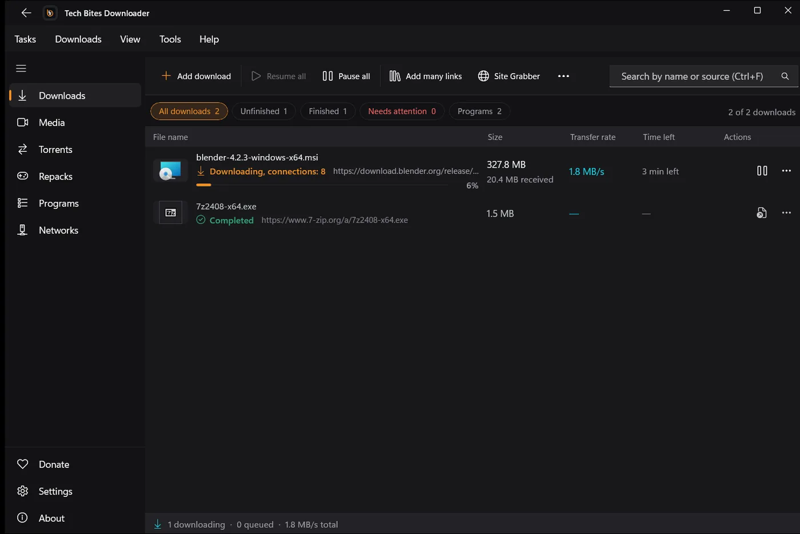
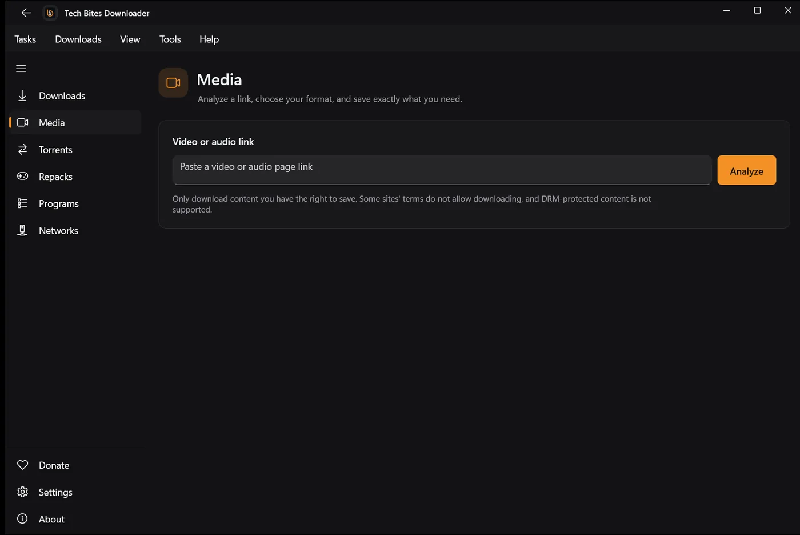

تنزيل أسرع
الملف الكبير بيتقسم لأجزاء بتتنزل مع بعض، والجزء اللي يخلص بدري بيساعد الأبطأ. وقّف وكمّل حتى بعد إعادة التشغيل، ولو النت فصل بيستنى ويكمل لوحده.
برنامج تنزيل مجاني لويندوز 10 و11
برنامج تنزيل سريع ومجاني لويندوز: فيديو وصوت وتورنت وملفات كبيرة ومواقع كاملة، كله في برنامج واحد. من غير حساب ومن غير إعلانات.

المميزات الأساسية في البرنامج.
الملف الكبير بيتقسم لأجزاء بتتنزل مع بعض، والجزء اللي يخلص بدري بيساعد الأبطأ. وقّف وكمّل حتى بعد إعادة التشغيل، ولو النت فصل بيستنى ويكمل لوحده.
الصق رابط صفحة، والبرنامج يحللها ويعرضلك كل الجودات والصيغ. فيديو أو صوت بس، Playlist كاملة، ترجمة جوه الفيديو، وبث HLS. شغال بـ yt-dlp وFFmpeg وبيتحدثوا لوحدهم.
روابط magnet وملفات torrent. اختار الملفات قبل ما تبدأ، وقّف وكمّل واعمل فحص للملفات، وحدد المشاركة بنسبة أو بوقت.
لـ Chrome وEdge وBrave وFirefox، وبتتظبط بضغطة من أول شاشة. التنزيلات بتروح للبرنامج، وزرار فيديو في الصفحات المدعومة بيعرض الجودات.
إديله صفحة بداية وهو يلف على الموقع ويجمع كل الملفات. تتحكم في العمق وعدد الصفحات والفلاتر، وبيحترم robots.txt.
قوائم منظمة، جدولة بوقت بدء وأيام في الأسبوع، وعدد تنزيلات في نفس الوقت. وتقسيم الملفات في فولدرات حسب النوع.
صور حقيقية من النسخة الحالية.

من التحميل لأول ملف في دقيقة.
نزّل ملف التثبيت وشغّله. مفيش تسجيل.
الصق رابط، أو افتح ملف تورنت، أو سيب إضافة المتصفح تلقط التنزيل.
Fetch بيقسم ويكمل ويدمج وينظم، وبيحدث نفسه بعد كده.
تك بايتس فيتش مجاني للجميع وسيظل كذلك. بدون إعلانات، بدون ميزات مقفولة، وبدون اشتراكات. التطبيق من تطوير وصيانة صانع محتوى واحد: سمير مسعود. لو التطبيق وفّر عليك وقت، أي دعم بسيط يساعد في تحديثه باستمرار ودعم المواقع الجديدة وإضافة ميزات جديدة. الدعم اختياري، ومشاركة التطبيق مع أصحابك بتفرق معانا برضه.
طرق تانية ببلاش: اعمل نجمة للمشروع على GitHub، شاركه مع صاحبك، أو بلّغ عن مشكلة.
ويندوز 10 (إصدار 1809 أو أحدث) أو ويندوز 11، 64 بت. حوالي 1 جيجا مساحة للبرنامج وأدواته، وإنترنت.